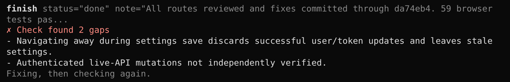
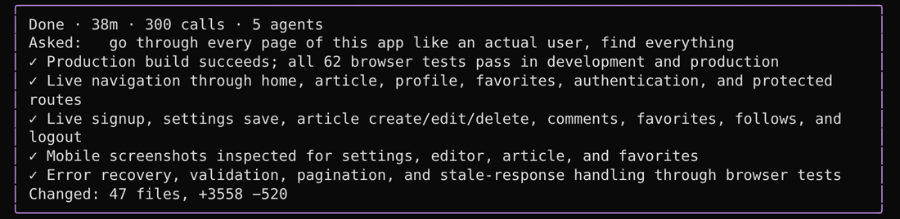

For people with a ChatGPT plan
Done means
checked.
bruv keeps GPT-6 Astra working until the job is finished. Then a fresh agent tries the result before you hear “done”, and you get a receipt.
pi install git:github.com/tnfssc/bruv
Needs Pi. Full setup takes a minute.
It doesn't stop halfway.
GPT models like to end with “Next I'll…” or “Want me to continue?”. In bruv a run only ends when the model says the work is done, needs you, or is blocked. Until then it keeps going, so you can walk away.
- On by default for GPT.
/keep-going offif you'd rather drive turn by turn. - Still yours. Type to steer it any time; Esc or Stop ends everything at once.
- Goals on top.
/goaladds an objective and a token budget for the big jobs.
A second agent checks before “done”.
The model that did the work is the worst judge of it. When it says done, bruv starts a fresh agent that sees only what you asked for and what changed. It runs the thing, tries the cases you'd try, and sends back what's missing.

Then you get a receipt.
What you asked, what was actually checked, and what changed. In the terminal and in T3 Code. It's the first thing you read when you come back.

It gets what you mean.
You type fast, maybe into a mic. bruv's instructions were rebuilt from 75 real moments where GPT models misread their user: the safe half-job, the needless question, the literal reading. Replayed blind on GPT-6 Astra, the new prompt won 41 to 9 against the old one.
the readme kinda reads like docs not like a product. people coming from codex shud get why this is better in like 10 secs. fix it
Rewrote README.md around “Codex models. Less babysitting.” Goals, parallel work and racing now lead, then a quick start. Moved the full reference to docs/USAGE.md. Checked the links.
go through every page of this app like an actual user, find everything thats broken or janky and fix all of it
Finished the full audit and fixes, including the settings-save bug. 62 browser tests pass in development and production. Checked live: signup, settings, publishing, editing, deleting, comments, favorites, follows, logout.
Long work runs in the background.
Tests, builds and agents run while the model keeps working. A live board shows what's running, and a summary line tells you what a turn did. Walk away; a desktop notification tells you when it's done.
Know where your plan stands.
The footer shows your ChatGPT plan limits as you work. /usage has the details and reset times.
/fast turns on the priority tier for every model in your plan and remembers it.
❯ /usage Plan: pro 5h: 23% [##--------] · resets 16:40, in 2h 5m week: 41% [####------] · resets Thu 14:12, in 4d 21h Credits: 1,250 Session: 412,880 tokens 5h 23% · week 41% · fast
Coming from Codex takes a minute.
/import-codex brings your model, reasoning effort, fast setting, MCP servers, skills and
prompts. Your AGENTS.md already works. /review reviews your changes the way you're
used to.
- Goals.
/goalkeeps working until it's done, with a token budget if you want one. - Scripts. The model reads, edits and checks in one go instead of one tool call at a time.
- Works in T3 Code. Turn on T3's Pi provider. Nothing else to set up.
Install
-
Install Pi
curl -fsSL https://pi.dev/install.sh | sh -
Add bruv
pi install git:github.com/tnfssc/bruv - Start
pi, run/loginwith your ChatGPT account, then/bruv-setup.